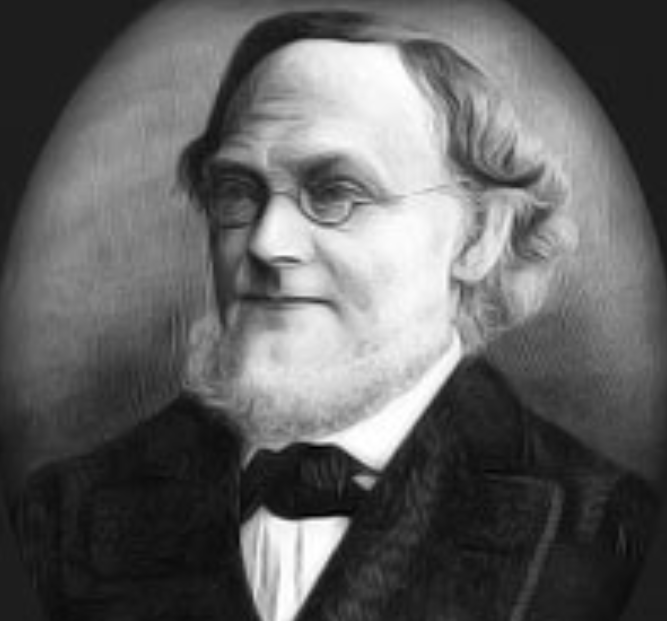

Conjetura de Goldbach: 1742
La conjetura de Goldbach afirma que todo número par mayor que 2 puede expresarse como la suma de dos números primos. Aunque ha sido verificada para números muy grandes, aún no se ha demostrado de manera general para todos los números pares, por lo que sigue siendo uno de los problemas más famosos y no resueltos en la teoría de números. La conjetura es simple de entender, pero su demostración sigue siendo un desafío en las matemáticas.
Volver a la página principal